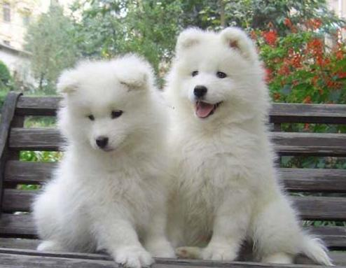

Samoyed Dogs
A large breed of herding dog, from the spitz group, with a thick, white, double-layer coat
- Scientific Name: Samoyed
- Average Length: 50cm
- Average Lifespan: 8 years
- Habitat: Northwest Russian and Western Siberia
It takes its name from the Samoyedic peoples of Siberia. These nomadic reindeer herders bred the fluffy white dogs to help with the herding, and to pull sleds when they moved. An alternate name for the breed, especially in Europe, is Bjelkier.